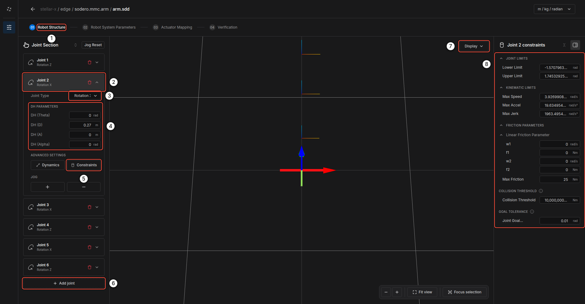
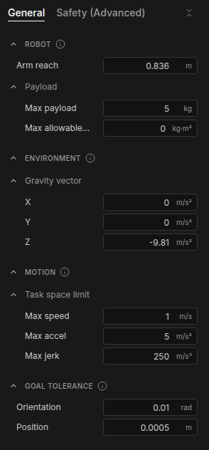
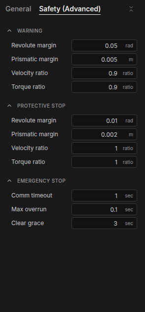
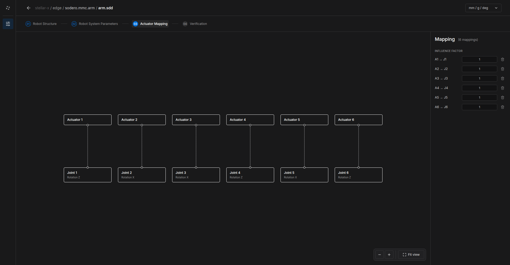
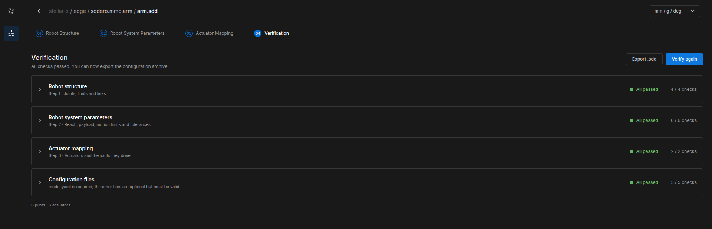

Manipulator (.sdd)¶
This guide walks through the four steps of a manipulator document. The document belongs to a Motion Studio node (sodero.mmc.NAME), which drives the arm through an actuator gateway. The pictures show a 6-axis arm; there is no downloadable example arm, so you enter the data of your own arm.
Before You Start¶
- On the Station, add a Controller › Motion Studio node, for example
arm, and an Actuator gateway for its motors (Nodes and Connections). - Select the Motion Studio node and click Edit Stellar Designer. For a new node, choose a template or Blank robot in Create robot definition.
You need the arm's kinematics as DH parameters (from its datasheet or CAD), its joint limits, and, for accurate gravity compensation and collision detection, the mass properties of its links.
Step 1: Robot Structure¶


Step 01 Robot Structure ① shows the Joint Section: the joints from the base to the tool flange.
- Click Add joint ⑥ to add a joint at the end of the chain. The trash icon removes a joint.
- Open a joint ② and choose its Joint Type ③: rotation or translation about the joint's X, Y or Z axis.
- Enter its DH PARAMETERS ④: DH (Theta), DH (D), DH (A) and DH (Alpha). The 3D view updates as you type.
- Under ADVANCED SETTINGS:
- Dynamics: the mass, center of mass and inertia of the link that moves with this joint.
- Constraints ⑤: opens the joint's constraints in the right panel ⑧.
- Use JOG + / − to move the joint in the 3D view and check its direction. Jog Reset returns all joints to zero.
Joint constraints ⑧:
| Group | Fields | Meaning |
|---|---|---|
| JOINT LIMITS | Lower Limit, Upper Limit | Range of motion of the joint |
| KINEMATIC LIMITS | Max Speed, Max Accel, Max Jerk | Limits of trajectories in joint space |
| FRICTION PARAMETERS | w1, f1, w2, f2, Max Friction | Friction model used by the dynamics (velocity and torque breakpoints) |
| COLLISION THRESHOLD | Collision Threshold | Residual torque above which the controller detects a collision and stops |
| GOAL TOLERANCE | Joint Goal | How close a joint must be for a motion to count as finished |
Display ⑦ switches the 3D view between the skeleton and the robot's 3D model (Stellar Designer).
Step 2: Robot System Parameters¶




General:
| Group | Fields | Meaning |
|---|---|---|
| ROBOT | Arm reach, Max payload, Max allowable inertia | Size and payload rating of the arm |
| ENVIRONMENT | Gravity vector | Direction and size of gravity in the base frame; (0, 0, -9.81) m/s² for a floor-mounted arm. Change it for wall or ceiling mounting. |
| MOTION | Task space limit: Max speed, Max accel, Max jerk | Limits of the tool in Cartesian motions |
| GOAL TOLERANCE | Position, Orientation | How close the tool must be for a Cartesian motion to count as finished |
Safety (Advanced):
| Group | Fields | Meaning |
|---|---|---|
| WARNING | Revolute margin, Prismatic margin, Velocity ratio, Torque ratio | Distance to a joint limit, or fraction of a speed or torque limit, at which the controller warns |
| PROTECTIVE STOP | the same fields | Thresholds at which the controller stops the robot |
| EMERGENCY STOP | Comm timeout, Max overrun | Emergency stop when the gateway's feedback is missing for longer than Comm timeout, or the control loop overruns for longer than Max overrun |
| Clear grace | After a protective stop is cleared, joint position limits are not checked for this time, so the robot can move back from the limit |
Step 3: Actuator Mapping¶


The canvas shows the gateway's actuators (top) and the robot's joints (bottom).
- Drag from an actuator's connector to a joint's connector to connect them. A new arm starts with Actuator n connected to Joint n.
- In the right panel, set the INFLUENCE FACTOR of each connection: how many joint units one actuator unit moves, after the gear. Use
1for a direct joint, a negative value to reverse the direction, and several connections for coupled joints (such as a differential wrist). - The trash icon removes a connection.
The gear ratio of each motor belongs to the gateway's document, not here (Gateway Designer).
Step 4: Verification¶
- Click Verify. Stellar Designer checks the robot structure, the system parameters, the actuator mapping and the configuration files of the document.
- Open a group to see each check. Fix any errors and click Verify again.


Export .sdd saves a copy of the document to your computer, for backup or for other Stations.
Try the Arm¶
- Return to the Station, connect the Motion Studio node's
servo_linkto the gateway, and start the gateway and the Motion Studio node. - Open Stellar Motion Studio from the node and jog each joint slowly. Check that every joint moves in the direction and by the angle you expect (Motion Studio).
Tip: Try a new document in Isaac Sim first (Virtual Simulation). Errors in DH parameters or joint directions are easy to see there and harmless.